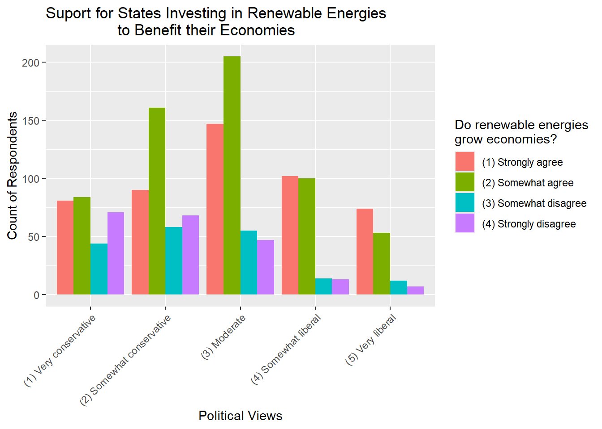
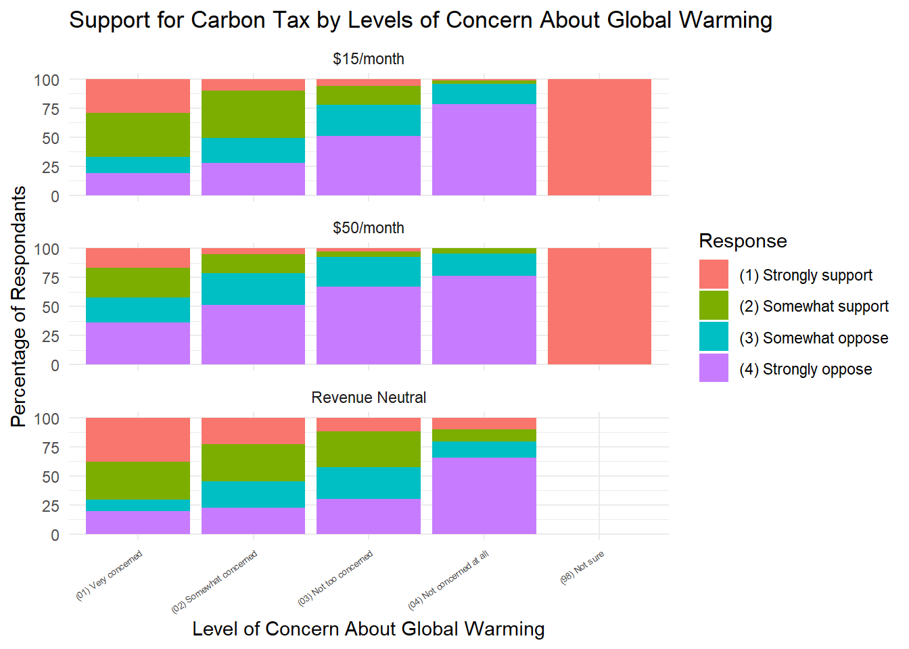
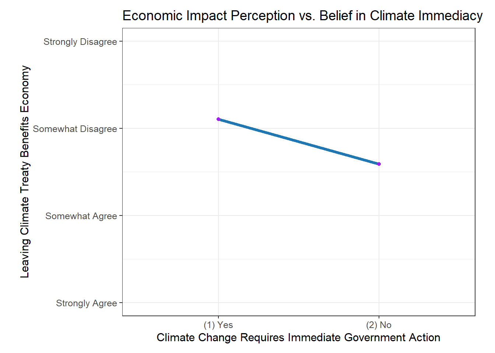
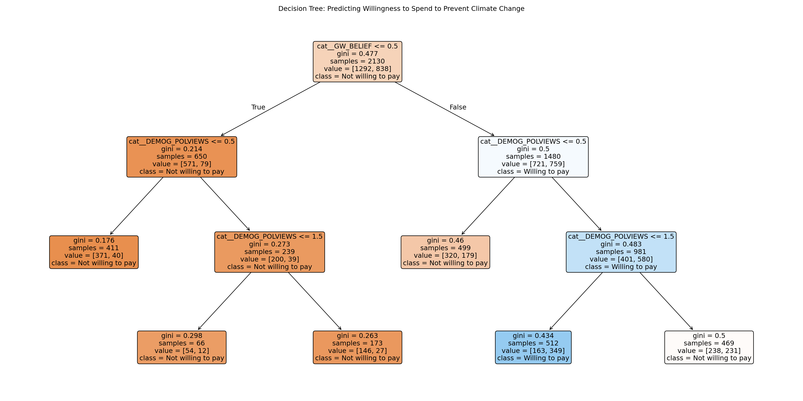
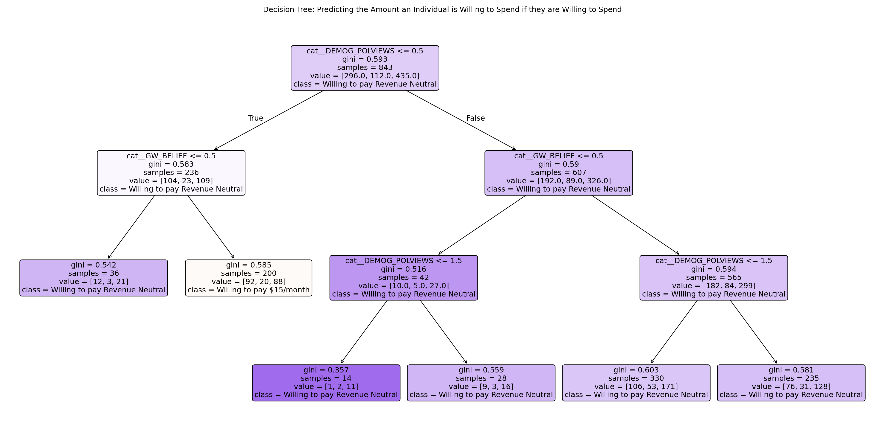
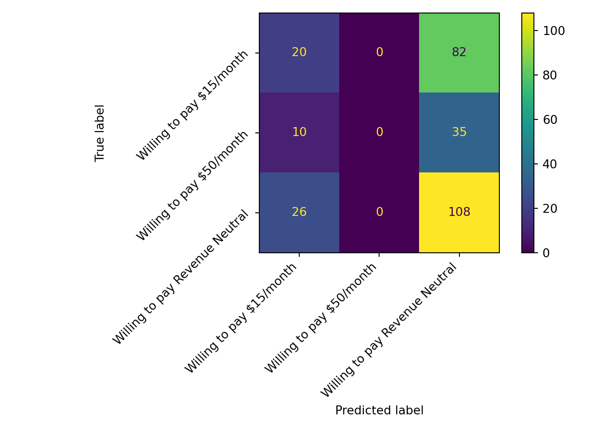

#Install Packages
library(polite)
library(rvest)
library(tibble)
library(tidyverse)
library(dplyr)
library(reticulate)
library(knitr)
library(tidyr)
path_to_python <- "/Users/Eli/anaconda3/python.exe"
use_python(path_to_python)Preliminary Analysis
Preliminary Analysis
Introduction and Data
In the United States, climate change has become a heavily contentious and debated issue. The climate crisis is one of the largest issues that we are facing today, and understanding the general population’s stance and views on climate change is important for policy making decisions. There have been a myriad of studies looking at what factors are correlated with a belief in climate change, like Robinson and Furnham’s (2022) study: Correlates of belief in climate change: Demographics, ideology and belief systems. There are also studies investigating companies’ willingness to pay to reduce climate change, like Zhao et. all (2018): Factors influencing companies’ willingness to pay for carbon emissions: Emission trading schemes in China. However, there have not been very many studies examining what impacts individuals willingness to pay to counteract climate change. This is a very important area to examine since public support for climate change action is necessary to influence governments to make changes - like public support for carbon reduction policies which we will examine later.
The question we aim to answer throughout this data analysis is: How do individual beliefs (regarding climate change, political stances, education levels, and views on the role of government) influence personal willingness to spend to reduce climate change?
In this dataset we anticipate that there will be a strong positive correlation between individuals that are more liberal and higher educated and willingness to pay to reduce climate change. We also anticipate the reverse, that individuals that are less educated and more conservative will have lower willingness to pay to support climate change. We also expect that the more an individual believes in the reality of global warming and the more pressing they find the issue to be, the more likely they are to be willing to pay to reduce greenhouse gas emissions.
The data set that we are analyzing comes from The National Surveys on Energy and Environment (NSEE). The NSEE is a biannual national opinion survey. This data set contains 18 survey batches collected from Fall 2008 to Spring 2017. Each case represents an individual’s responses to the survey questions. There are 15,136 total cases.
Relevant variables:
CARBONTAX - These are 3 variables that look at different levels of willingness to pay in support of the Carbon tax in this general format: Support for Carbon fuels tax if it raises costs by X$ a month. What if the carbon fuels taxes significantly lowered greenhouse gases but increased your energy costs by X dollars a month? Would you strongly support, somewhat support, somewhat oppose or strongly oppose this type of system?
STATE_RPS_ECONOMY- This measures the level of agreement respondents have with this statement- State governments will boost their economies by requiring greater use of renewable energy.
INTL_ECONOMICIMPACT- This measures the level of agreement respondents have with this statement- Overall, the U.S. economy would benefit from leaving the international climate treaty designed to reduce greenhouse gas emissions).
DEMOG_POLVIEWS: This reports respondents Political beliefs, on a scale from conservative to liberal
GW_CONCERN: This reports how concerned respondents are about the issue of global warming.
BELIEVER_IMMEDIACY: This reports if respondents believe that global warming requires immediate government action.
GOVT_FED: This measures the level of agreement respondents have with this statement- How much responsibility does the federal government have for taking actions to reduce global warming?
DEMOG_EDU: The Highest level of education respondents have.
Data wrangling
The majority of our data cleaning entailed removing NA values (there were a lot since not all questions were asked each year - each individual variable had a unique number of NA values that had to be dropped), as well as Not Sure or Refused to answer (Since they don’t provide any real information into how the respondent stands on economic or climate based issues).
In terms of data wrangling - the majority of it came prior to graphing and the creation of models - many variables had string responses which made it harder to read comparisons. We had to convert the variable INTL_ECONOMICIMPACT from String responses to numerical responses in order to take an average value of the responses for the different BELIEVER_IMMEDIACY values - we converted to numerical responses using a scale where Strongly agree took on a value of 1, Somewhat agree took on a value of 2, Somewhat disagree took a value of 3, and Strongly disagree took a value of 4. We also simplified WAVE_NUMBER into just the year that the surveys were taken and converted them into Date data types for ease of graphing. January 1st was given as an arbitrary date and does not represent the true date that the surveys were taken. For our model, we simplified the variable DEMOG_POLVIEWS to only have 3 political standings: We combined Very liberal and Somewhat liberal to just be Liberal, and combined Very Conservative and Somewhat Conservative to just be Conservative, and left Moderate the same. This was necessary in order to allow the decision tree to be readable - and to have enough data at each end node.
We created one important variable that we will use in our analysis: CARBONTAX_SUPPORT: This variable takes in the 3 levels of willingness to pay for the carbon tax, and returns the maximum value a given individual will be willing to pay for the carbon tax - or if they are unwilling to pay at all.
In our model, we plan to use CARBONTAX_SUPPORT as our outcome variable that will be predicted by our decision tree. This was the variable in our data set that we thought was the best for showing an individual’s willingness to pay to reduce climate change, since this tax explicitly attempts to reduce greenhouse gas emissions by increasing the prices of fossil fuels. So, it is our best measure of what individuals care about more, the environment, or their own financial standing. We thought that two of the more important factors that will determine willingness to pay for carbon reduction practices would be if they do or do not believe in global warming in the first place - and their political ideologies, since global warming has increasingly become a political issue. We are using GW_BELIEF (if individuals believe in global warming or not), and DEMOG_POLVIEWS (the respondents political beliefs), to predict what level of the Carbon tax individuals will be willing to pay - we model this using a decision tree.
Methodology
import pandas as pd
import numpy as np
import matplotlib.pyplot as plt
import seaborn as sns
from sklearn.preprocessing import StandardScaler, OneHotEncoder, OrdinalEncoder
from sklearn.pipeline import Pipeline
from sklearn.compose import make_column_transformer, ColumnTransformer
from sklearn.linear_model import LinearRegression
from sklearn.model_selection import cross_val_predict, train_test_split, cross_val_score
from sklearn.metrics import mean_squared_error, r2_score, ConfusionMatrixDisplay
from sklearn.linear_model import Ridge, RidgeCV, Lasso, LassoCV, ElasticNetCV
from sklearn.tree import DecisionTreeClassifier, DecisionTreeRegressor, plot_tree
from sklearn.ensemble import RandomForestClassifier, RandomForestRegressor
from sklearn.ensemble import GradientBoostingClassifier, GradientBoostingRegressor#Loading the dataset
load("data/36368-0001-Data.rda")
econ_clim_data <- as.data.frame(da36368.0001)#Creating a dataframe with only our necessary variables
working_dataset <- econ_clim_data %>%
select("WAVE_NUMBER", "INTL_ECONOMICIMPACT", "STATE_VEHICLES_V1",
"STATE_VEHICLES_V2", "CARBONTAX_COST10PCT", "CARBONTAX_COST15DOL",
"CARBONTAX_COST50DOL", "STATE_RPS_ECONOMY", "GW_BELIEF",
"GW_CONCERN", "BELIEVER_IMMEDIACY", "GOVT_EFFECTIVENESS", "GOVT_FED",
"STATE_NEIGHBORSACT", "GASTAX_GOVT", "FFTAX_GOVT",
"CAPTRADE_GOVT_V1", "GOVT_EFFECTIVENESS_V2", "GOVT_EFFECTIVENESS",
"STATE_RPS_V1", "STATE_RPS_V2", "STATE_RPS_V2_COST100",
"STATE_RPS_V3", "STATE_RPS_V3_COST25", "STATE_RPS_V3_COST50",
"DEMOG_EDU", "DEMOG_POLVIEWS", "DEMOG_RELIG")working_dataset2 <- working_dataset %>%
mutate(
CARBONTAX_SUPPORT = case_when(
!is.na(CARBONTAX_COST50DOL) & CARBONTAX_COST50DOL %in% c("(1) Strongly support", "(2) Somewhat support") ~ "Willing to pay $50/month",
!is.na(CARBONTAX_COST15DOL) & CARBONTAX_COST15DOL %in% c("(1) Strongly support", "(2) Somewhat support") ~ "Willing to pay $15/month",
!is.na(CARBONTAX_COST10PCT) & CARBONTAX_COST10PCT %in% c("(1) Strongly support", "(2) Somewhat support") ~ "Willing to pay Revenue Neutral",
!is.na(CARBONTAX_COST50DOL) & CARBONTAX_COST50DOL %in% c("(3) Somewhat oppose", "(4) Strongly oppose") |
!is.na(CARBONTAX_COST15DOL) & CARBONTAX_COST15DOL %in% c("(3) Somewhat oppose", "(4) Strongly oppose") |
!is.na(CARBONTAX_COST10PCT) & CARBONTAX_COST10PCT %in% c("(3) Somewhat oppose", "(4) Strongly oppose") ~ "Not willing to pay"
)
)
working_dataset2 <- working_dataset2 %>%
mutate(
CARBONTAX_SUPPORT_BI = case_when(
!is.na(CARBONTAX_COST50DOL) & CARBONTAX_COST50DOL %in% c("(1) Strongly support", "(2) Somewhat support") |
!is.na(CARBONTAX_COST15DOL) & CARBONTAX_COST15DOL %in% c("(1) Strongly support", "(2) Somewhat support") |
!is.na(CARBONTAX_COST10PCT) & CARBONTAX_COST10PCT %in% c("(1) Strongly support", "(2) Somewhat support") ~ "Willing to pay",
!is.na(CARBONTAX_COST50DOL) & CARBONTAX_COST50DOL %in% c("(3) Somewhat oppose", "(4) Strongly oppose") |
!is.na(CARBONTAX_COST15DOL) & CARBONTAX_COST15DOL %in% c("(3) Somewhat oppose", "(4) Strongly oppose") |
!is.na(CARBONTAX_COST10PCT) & CARBONTAX_COST10PCT %in% c("(3) Somewhat oppose", "(4) Strongly oppose") ~ "Not willing to pay",
TRUE ~ NA_character_ # This ensures NA if no support and any value is NA
)
) %>% relocate(CARBONTAX_SUPPORT_BI, .before = STATE_RPS_ECONOMY)
working_dataset2 <- working_dataset2 %>%
mutate(
DEMOG_POLVIEWS = case_when(
DEMOG_POLVIEWS %in% c("(4) Somewhat liberal", "(5) Very liberal") ~ "Liberal",
DEMOG_POLVIEWS %in% c("(2) Somewhat conservative", "(1) Very conservative") ~ "Conservative",
DEMOG_POLVIEWS %in% c("(3) Moderate") ~ "Moderate",
TRUE ~ NA_character_
)
)
# View the dataset with the new variable#Summary Table for our dataset
summary_table <- working_dataset2 %>%
select(CARBONTAX_SUPPORT, STATE_RPS_ECONOMY, INTL_ECONOMICIMPACT, DEMOG_POLVIEWS, DEMOG_EDU, GW_BELIEF, GW_CONCERN, BELIEVER_IMMEDIACY, GOVT_FED) %>%
pivot_longer(cols = everything(), names_to = "Variable", values_to = "Response") %>%
filter(!is.na(Response)) %>%
group_by(Variable, Response) %>%
summarise(
Count = n(),
.groups = "drop"
) %>%
group_by(Variable) %>%
mutate(
Percent = round(Count / sum(Count) * 100, 1)
) %>%
arrange(Variable, desc(Count))
summary_table %>%
kable(caption = "Summary of Categorical Variables",
col.names = c("Variable", "Response", "Count", "Percent (%)"))| Variable | Response | Count | Percent (%) |
|---|---|---|---|
| BELIEVER_IMMEDIACY | (1) Yes | 1954 | 75.2 |
| BELIEVER_IMMEDIACY | (2) No | 646 | 24.8 |
| CARBONTAX_SUPPORT | Not willing to pay | 2645 | 60.5 |
| CARBONTAX_SUPPORT | Willing to pay $15/month | 690 | 15.8 |
| CARBONTAX_SUPPORT | Willing to pay Revenue Neutral | 667 | 15.3 |
| CARBONTAX_SUPPORT | Willing to pay $50/month | 371 | 8.5 |
| DEMOG_EDU | (4) College graduate | 4326 | 29.1 |
| DEMOG_EDU | (3) Some college or technical school | 4010 | 27.0 |
| DEMOG_EDU | (2) High school graduate | 3463 | 23.3 |
| DEMOG_EDU | (5) Graduate or professional degree | 2605 | 17.5 |
| DEMOG_EDU | (1) Less than high school graduate | 475 | 3.2 |
| DEMOG_POLVIEWS | Conservative | 4721 | 40.9 |
| DEMOG_POLVIEWS | Moderate | 3865 | 33.5 |
| DEMOG_POLVIEWS | Liberal | 2963 | 25.7 |
| GOVT_FED | (1) A great deal of responsibility | 2564 | 51.0 |
| GOVT_FED | (2) Some responsibility | 1511 | 30.0 |
| GOVT_FED | (3) No responsibility | 957 | 19.0 |
| GW_BELIEF | (1) Yes | 9568 | 72.4 |
| GW_BELIEF | (2) No | 3652 | 27.6 |
| GW_CONCERN | (01) Very concerned | 1851 | 45.3 |
| GW_CONCERN | (02) Somewhat concerned | 1466 | 35.9 |
| GW_CONCERN | (03) Not too concerned | 518 | 12.7 |
| GW_CONCERN | (04) Not concerned at all | 243 | 6.0 |
| GW_CONCERN | (98) Not sure | 6 | 0.1 |
| INTL_ECONOMICIMPACT | (4) Strongly disagree | 313 | 40.9 |
| INTL_ECONOMICIMPACT | (1) Strongly agree | 170 | 22.2 |
| INTL_ECONOMICIMPACT | (2) Somewhat agree | 154 | 20.1 |
| INTL_ECONOMICIMPACT | (3) Somewhat disagree | 129 | 16.8 |
| STATE_RPS_ECONOMY | (2) Somewhat agree | 1238 | 41.1 |
| STATE_RPS_ECONOMY | (1) Strongly agree | 1072 | 35.6 |
| STATE_RPS_ECONOMY | (3) Somewhat disagree | 355 | 11.8 |
| STATE_RPS_ECONOMY | (4) Strongly disagree | 348 | 11.5 |
#Graph 1: Support for States Investing in Renewable Energies to Benefit their Economies
# count instances unique values in STATE_ECO and
# save it to a new data structure to graph easier
eco_by_polview <- as.data.frame(table(working_dataset$DEMOG_POLVIEWS,
working_dataset$STATE_RPS_ECONOMY))
colnames(eco_by_polview) <- c("POLVIEWS", "STATE_ECO", "Count")
eco_by_polview <- eco_by_polview %>%
spread(key = STATE_ECO, value = Count, fill = 0)
eco_by_polview <- eco_by_polview %>%
pivot_longer(cols = c("(1) Strongly agree", "(2) Somewhat agree",
"(3) Somewhat disagree", "(4) Strongly disagree"),
names_to = "STATE_ECO",
values_to = "Count")
polviews_state_eco <- eco_by_polview %>%
ggplot(aes(x=POLVIEWS,
y=Count,
fill = STATE_ECO)) +
geom_bar(stat = "identity", position = "dodge") +
theme(axis.text.x = element_text(angle = 45, vjust = 1, hjust=1)) +
labs(x="Political Views",
y="Count of Respondents",
title = "Suport for States Investing in Renewable Energies
to Benefit their Economies") +
guides(fill=guide_legend(title="Do renewable energies
grow economies?"))
This graph shows the level of support respondents of varying political ideologies have for states investing in renewable energies based on perceived economic results.
# remove everything but year info from WAVE_NUMBER
working_dataset <- working_dataset %>%
mutate(WAVE_NUMBER = (sub('.*(?=.....$)', '', WAVE_NUMBER, perl=T)) %>%
paste("/01/01", sep="")
)# Graph 2: Support for States Investing in Renawable Energies to Benefit their Economies Over Time
#new dataframe with only observations
# that answered the STATE_RPS_ECONOMY question
date_intl_graph <- working_dataset %>%
filter(STATE_RPS_ECONOMY %in% c(
"(1) Strongly agree",
"(2) Somewhat agree",
"(3) Somewhat disagree",
"(4) Strongly disagree"
))
# stacked bar graph
date_intl_graph <- date_intl_graph %>%
mutate(STATE_RPS_ECONOMY = factor(
STATE_RPS_ECONOMY,
levels = c("(1) Strongly agree", "(2) Somewhat agree",
"(3) Somewhat disagree", "(4) Strongly disagree")
))
# Build plot
date_intl_eco <- ggplot(date_intl_graph, aes(x = as.factor(WAVE_NUMBER), fill = STATE_RPS_ECONOMY)) +
geom_bar(position = "fill") +
scale_y_continuous(labels = scales::percent_format()) +
labs(
x = "Year",
y = "Percent of Respondents",
title = "Support for State Investment in Renewable Energy to Benefit Economy",
fill = "Renewable Energy Support"
) +
theme_minimal() +
theme(
axis.text.x = element_text(angle = 45, hjust = 1)
)
# Show plot
date_intl_eco
This graph shows the change in respondent’s beliefs over the period of 5 years about if states investing in renewable energies would be beneficial to their economies or not.
#Graph 3: Support for Carbon Tax by Levels of Concern About Global Warming
#Getting rid of NA values in GW_Concern
excluded_values <- c(NA)
# Calculate percentages of people that strong support, somewhat support,
# somewhat oppose, and strongly oppose for differnet GW_Concern responses
# while removing NA and "Not Sure" responses
data_carbontax10 <- working_dataset %>%
filter(!GW_CONCERN %in% excluded_values, !is.na(CARBONTAX_COST10PCT)) %>%
group_by(GW_CONCERN, CARBONTAX_COST10PCT) %>%
summarise(Count = n(), .groups = "drop") %>%
group_by(GW_CONCERN) %>%
mutate(Percentage = (Count / sum(Count)) * 100) %>%
mutate(CarbonTax = "Revenue Neutral")
data_carbontax15 <- working_dataset %>%
filter(!GW_CONCERN %in% excluded_values, !is.na(CARBONTAX_COST15DOL)) %>%
group_by(GW_CONCERN, CARBONTAX_COST15DOL) %>%
summarise(Count = n(), .groups = "drop") %>%
group_by(GW_CONCERN) %>%
mutate(Percentage = (Count / sum(Count)) * 100) %>%
mutate(CarbonTax = "$15/month")
data_carbontax50 <- working_dataset %>%
filter(!GW_CONCERN %in% excluded_values, !is.na(CARBONTAX_COST50DOL)) %>%
group_by(GW_CONCERN, CARBONTAX_COST50DOL) %>%
summarise(Count = n(), .groups = "drop") %>%
group_by(GW_CONCERN) %>%
mutate(Percentage = (Count / sum(Count)) * 100) %>%
mutate(CarbonTax = "$50/month")
# Rename response column
colnames(data_carbontax10)[2] <- "Response"
colnames(data_carbontax15)[2] <- "Response"
colnames(data_carbontax50)[2] <- "Response"
# Combine data to use for the graph
data_combined <- bind_rows(data_carbontax10,
data_carbontax15,
data_carbontax50)
# Creating the stacked bar chart
ggplot(data_combined, aes(x = GW_CONCERN, y = Percentage, fill = Response)) +
geom_bar(stat = "identity", position = "stack") +
facet_wrap(~ CarbonTax, ncol = 1) +
labs(
title = "Support for Carbon Tax by Levels of Concern About Global Warming",
x = "Level of Concern About Global Warming",
y = "Percentage of Respondants",
fill = "Response"
) +
theme_minimal() +
theme(axis.text.x = element_text(angle = 35, hjust = 1, size = 5))
This graph shows the level of support respondents have for the different variations of the Carbon tax which are designed to significantly lower greenhouse gases. Revenue Neutral means that every dollar collected by the government would be returned to the public as an income tax rebate. 15$/month means it would increase energy costs by 15 dollars a month, and 50$/month means it would increase energy costs by 50$/month. These charts show that the more concerned an individual is about global warming, the more they will support the various levels of carbon tax - and the support decreases as costs go up. The largest support for carbon tax is found in individuals who are very concerned about global warming at the revenue neutral level - and there is almost no support found for individuals who are not concerned about global warming at all at any level of cost.
#Graph 4: Economic Impact Perception vs. Belief in Climate Immediacy
#Removing NA values for graph
clean_data <- working_dataset %>%
filter(!is.na(INTL_ECONOMICIMPACT), !is.na(BELIEVER_IMMEDIACY))
#Changing INTL_ECONOMICIMPACT to have numerical values instead of words
second_graph <- clean_data %>%
filter(INTL_ECONOMICIMPACT %in% c(
"(1) Strongly agree", "(2) Somewhat agree",
"(3) Somewhat disagree", "(4) Strongly disagree"
)) %>%
mutate(INTL_ECONOMICIMPACT = case_when(
INTL_ECONOMICIMPACT == "(1) Strongly agree" ~ 1,
INTL_ECONOMICIMPACT == "(2) Somewhat agree" ~ 2,
INTL_ECONOMICIMPACT == "(3) Somewhat disagree" ~ 3,
INTL_ECONOMICIMPACT == "(4) Strongly disagree" ~ 4
))
#Calculating the average numerical value of INTL_ECONOMICIMPACT
# for each response of BELIEVER_IMMEDIACY
result <- second_graph %>%
group_by(BELIEVER_IMMEDIACY) %>%
summarise(avg_intl_economic_impact = mean(INTL_ECONOMICIMPACT, na.rm = TRUE))
# Plotting the result
ggplot(result, aes(x = BELIEVER_IMMEDIACY,
y = avg_intl_economic_impact,
group = 1)) +
geom_line(color = "#1f78b4", size = 1.5) +
geom_point(linewidth = 2.5, color = "purple") +
labs(
title = "Economic Impact Perception vs. Belief in Climate Immediacy",
x = "Climate Change Requires Immediate Government Action",
y = "Leaving Climate Treaty Benefits Economy"
) +
scale_y_continuous(limits = c(1, 4),
breaks = seq(1, 4, by = 1),
labels = c("Strongly Agree", "Somewhat Agree",
"Somewhat Disagree", "Strongly Disagree")
) +
theme_bw(base_size = 11.5)+
theme(plot.margin = margin(10, 20, 10, 20))
This graph shows the average level that respondents believe that the U.S. economy would benefit from leaving the international climate treaty designed to reduce greenhouse gas emissions - if they believe or don’t believe that global warming requires immediate government action. This graph shows that if an individual believes that climate change requires immediate government action, then they are more likely to believe that leaving the climate treaty will hurt the US economy - not help it.
#Graph 5: Individual Support for Carbon Tax by the Level of Responsibility the Government should have over Climate change and Political Views
working_dataset2 %>%
filter(!is.na(CARBONTAX_SUPPORT), !is.na(GOVT_FED), !is.na(DEMOG_POLVIEWS)) %>%
mutate(SUPPORT_BINARY = ifelse(CARBONTAX_SUPPORT %in% c("Willing to pay $50/month",
"Willing to pay $15/month",
"Willing to pay Revenue Neutral"), 1, 0)) %>%
group_by(GOVT_FED, DEMOG_POLVIEWS) %>%
summarise(mean_support = mean(SUPPORT_BINARY, na.rm = TRUE), .groups = "drop") %>%
ggplot(aes(x = DEMOG_POLVIEWS, y = GOVT_FED, fill = mean_support)) +
geom_tile() +
scale_fill_gradient(low = "white", high = "darkgreen", labels = scales::percent) +
labs(
x = "Political Views",
y = "Fed. Gov Level Responsibility",
fill = "% Support for Carbon Tax",
title = "Carbon Tax Support by Gov Responsibility & Poli Views"
) +
theme_minimal()
This graph shows the percent of individuals that support the carbon tax by their political ideology, and how much responsibility they believe the Federal Government has for taking action to reduce global warming. This shows that across political ideologies- the more an individual believes it is the responsibility of the government to reduce global warming, the more likely they are to be willing to pay for the carbon tax. Additionally- overall the more liberal an individual is the more likely they are to be willing to pay for the carbon tax.
Results
#Creating new smaller dataframe for decision tree in python #Converting data to python format
#Messing with variables
working_dataset2 = pd.read_csv('working_dataset2.csv')
columns_to_select = ["DEMOG_POLVIEWS", "DEMOG_EDU", "GW_BELIEF",
"INTL_ECONOMICIMPACT", "CARBONTAX_SUPPORT", "CARBONTAX_SUPPORT_BI"]
# Create the subset DataFrame
working_data_tree2 = working_dataset2[columns_to_select]
working_data_tree2 = working_data_tree2.dropna(subset=["DEMOG_POLVIEWS", "CARBONTAX_SUPPORT", "CARBONTAX_SUPPORT_BI", "GW_BELIEF"])
#For data with more rows
smaller_columns2 = ["DEMOG_POLVIEWS", "CARBONTAX_SUPPORT", "CARBONTAX_SUPPORT_BI", "GW_BELIEF"]
working_data_shrub2 = working_data_tree2[smaller_columns2]
#Redefining variables
working_data_shrub2.loc[:,'DEMOG_POLVIEWS'] = working_data_shrub2['DEMOG_POLVIEWS'].replace({
'(4) Somewhat liberal': 'Liberal',
'(2) Somewhat conservative': 'Conservative',
'(1) Very conservative': 'Conservative',
'(5) Very liberal': 'Liberal',
'(3) Moderate': 'Moderate'
})
working_data_shrub2.loc[:,'GW_BELIEF'] = working_data_shrub2['GW_BELIEF'].replace({
'(1) Yes': 'Yes',
'(2) No': 'No'
})# gw_belief -> polviews -> carbontax support
# Assuming 'working_data_shrub' is already defined
X = working_data_shrub2[["GW_BELIEF", "DEMOG_POLVIEWS"]]
y = working_data_shrub2["CARBONTAX_SUPPORT_BI"]
X_train, X_test, y_train, y_test = train_test_split(X, y, test_size = 0.25, random_state = 2010)
# Define preprocessing
categorical_features = ["GW_BELIEF", "DEMOG_POLVIEWS"]
encoder = OrdinalEncoder()
preprocessor = ColumnTransformer(
transformers=[("cat", encoder, categorical_features)],
remainder='drop'
)
# Build pipeline
clf = Pipeline([
("preprocessor", preprocessor),
("tree", DecisionTreeClassifier(max_depth=5, random_state=50))
])
# Fit model
clf = clf.fit(X_train, y_train)
# Plot the decision tree
plt.figure(figsize=(20, 10))
plot_tree(clf["tree"], # Get the tree model inside the pipeline
feature_names=clf["preprocessor"].get_feature_names_out(),
class_names=[str(c) for c in clf["tree"].classes_],
filled=True,
rounded=True,
fontsize=12)
plt.title("Decision Tree: Predicting Willingness to Spend to Prevent Climate Change")
plt.tight_layout()
plt.show()
# Access the fitted encoder
encoder_fitted = clf["preprocessor"].named_transformers_["cat"]
# Print categories in order
for feature, cats in zip(categorical_features, encoder_fitted.categories_):
print(f"{feature}:")
for i, cat in enumerate(cats):
print(f" {i}: {cat}")GW_BELIEF:
0: No
1: Yes
DEMOG_POLVIEWS:
0: Conservative
1: Liberal
2: Moderateclf.predict_proba(working_data_shrub2[["GW_BELIEF", "DEMOG_POLVIEWS","CARBONTAX_SUPPORT_BI"]])array([[0.9026764 , 0.0973236 ],
[0.31835938, 0.68164062],
[0.50746269, 0.49253731],
...,
[0.81818182, 0.18181818],
[0.50746269, 0.49253731],
[0.50746269, 0.49253731]])from sklearn.metrics import RocCurveDisplay
RocCurveDisplay.from_estimator(clf, X_test, y_test)<sklearn.metrics._plot.roc_curve.RocCurveDisplay object at 0x00000165526605C0>plt.show()
support_gw_option = working_data_shrub2.copy()
support_gw_option = support_gw_option[(support_gw_option.CARBONTAX_SUPPORT_BI.isin(["Willing to pay"]))]
X = support_gw_option[["GW_BELIEF", "DEMOG_POLVIEWS"]]
y = support_gw_option["CARBONTAX_SUPPORT"]
X_train, X_test, y_train, y_test = train_test_split(X, y, test_size = 0.25, random_state = 2010)
# Define preprocessing
categorical_features = ["GW_BELIEF", "DEMOG_POLVIEWS"]
encoder = OrdinalEncoder()
preprocessor = ColumnTransformer(
transformers=[("cat", encoder, categorical_features)],
remainder='drop'
)
# Build pipeline
clf = Pipeline([
("preprocessor", preprocessor),
("tree", DecisionTreeClassifier(max_depth=5, random_state=100))
])
# Fit model
clf = clf.fit(X_train, y_train)
# Plot the decision tree
plt.figure(figsize=(20, 10))
plot_tree(clf["tree"], # Get the tree model inside the pipeline
feature_names=clf["preprocessor"].get_feature_names_out(),
class_names=[str(c) for c in clf["tree"].classes_],
filled=True,
rounded=True,
fontsize=12)
plt.title("Decision Tree: Predicting the Amount an Individual is Willing to Spend if they are Willing to Spend")
plt.tight_layout()
plt.show()
cm = ConfusionMatrixDisplay.from_estimator(clf, X_test, y_test)
plt.xticks(rotation=45, ha='right');
plt.yticks(rotation=45);
plt.tight_layout() # Helps reduce padding issues too
# Save to PDF without clipping
plt.savefig("confusion_matrix.pdf", bbox_inches='tight')
Discussion
Analysis of Results
Our data supports our claim that more liberal minded individuals who believe in climate change are more likely to be willing to personally pay to attempt to limit the effects. Among those that are willing to pay, however, the group that was willing to pay the most on average were conservatives who did not believe in climate change. This is result is very surprising, however we believe that it may be due to a small sample size, as described in the next section. For our decision tree regarding if individuals are willing or not to pay extra taxes, we got an AUC score of 0.73. This is not particularly good and we could probably do better if we fit a forest rather than just one decision tree. Similarly, with our decision tree regarding how much people would be willing to put towards taxes for climate change, our confusion matrix shows that our fitting did an extremely poor job for the three different classes. This could also probably be remedied by fitting a forest rather than a single tree. Going forward, we will make sure to fit forests rather than trees, and even though trees are visually very good and representing the splits we wanted, we many test some other models aswell.
Reliability and Validity
The most major problem that we faced in our data analysis was that while our survey data spanned years from 2008 - 2017, there were some questions that - while very applicable to our data- were not asked in every year. This resulted in numerous NA values throughout the project, which reduced our sample size from 15,136 to a low of 766 in the graph Economic Impact Perception vs. Belief in Climate Immediacy - which used INTL_ECONOMICIMPACT - since this question was only asked in 2017. In the best case scenario, this means that the results shown in this graph can measure the Economic Impact Perception vs. Belief in Climate Immediacy in 2017 exclusively, but realistically the results cannot be extended beyond that year - especially given the political climate in 2017, marked by President Trump’s decision to withdraw from the Paris Climate Agreement. Public opinion was likely shaped in ways that are not representative of other periods. Thus, while the analysis offers insights into a specific moment in time, it does not provide a stable basis for predicting future trends or drawing broader inferences.
Additionally within our decision tree model, we only had 2,841 rows of observations - since we had to eliminate any rows that had NA values for GW_BELIEF, DEMOG_POLVIEWS, or CARBONTAX_SUPPORT in order for the function to run properly. While the eliminations were done without bias, it still is only 18.76% of the original dataset, and the reduced sample may not reflect the full diversity of public opinion contained in the broader survey data. This limitation directly affects the validity of our model: it is likely overfitted to the available data and may not generalize as well to new or unseen data. Additionally, it is important to highlight a broader limitation of our analysis - it is based off of survey-based research which can have many flaws. Individuals’ responses might not always accurately reflect their true beliefs or behaviors. For questions that have strong responses from a public perspective - people may feel a pressure to answer in a particular way (which climate questions do have). There also could be misunderstandings of the questions or rushing and making mistakes to get complete the survey faster which can distort survey results. So, even beyond our potential issues of sample size and missing data, there is a risk that the survey responses themselves may introduce biases, which could further limit the generalizability of our findings.
Ethical Concerns
One potential ethical concern in our project could arise from the simplification of political ideology categories. To create a more readable dataset, we grouped “very liberal” and “somewhat liberal” respondents into a single “liberal” category, and did the same for “very conservative” and “somewhat conservative” respondents, combining them into “conservative.” While this made the analysis more clear, it also risks obscuring differences in political attitudes. As a result, our findings could produce misleading conclusions regarding certain groups’ behaviors or actions. Another concern comes to be when looking at our primary outcome variable: respondents’ willingness to pay for a carbon tax. While we were trying to observe a connection between global warming, political ideologies, and their willingness to pay to better the environment, what is not included in our analysis is that an individual’s unwillingness to pay may not be related to how much they care about the environment, but could just be for financial reasons. Financial constraints could easily influence responses, particularly for higher proposed amounts (e.g., $10, $15, or $50 per month). Another ethical risk of our project would arise if the results were to be used in a policy-making or public communication context. For example, oversimplified interpretations could reinforce political stereotypes—such as suggesting that “Republicans don’t care about the environment.” Such conclusions would misrepresent the data, and could deepen existing political divisions. To try to avoid this, we tried to present our findings descriptively, without making normative claims.
Citations
Rabe, Barry, et al. “National Surveys on Energy and the Environment, [United States], Fall 2008-Fall 2017.” National Surveys on Energy and the Environment, [United States], Fall 2008-Fall 2017, Inter-university Consortium for Political and Social Research [distributor], 24 Aug. 2020, www.icpsr.umich.edu/web/ICPSR/studies/36368.
Teyton, Anaïs, and David M Abramson. “The Formation of Belief: An Examination of Factors That Influence Climate Change Belief among Hurricane Katrina Survivors.” Environmental Justice (Print), U.S. National Library of Medicine, 1 June 2021, pmc.ncbi.nlm.nih.gov/articles/PMC8259080/.
Zhao, Yibing, et al. “Factors Influencing Companies’ Willingness to Pay for Carbon Emissions: Emission Trading Schemes in China.” Energy Economics, North-Holland, 5 Sept. 2018, www.sciencedirect.com/science/article/pii/S0140988318303694.